3.4 Circular motion
Further Mechanics · angular speed · centripetal force · horizontal and vertical circles
考生需要能够：
- 使用弧长、angular speed、速度和加速度之间的关系；
- 写出圆周运动中 radial 与 transverse acceleration；
- 使用 a=r\omega^2=v^2/r 判断 centripetal acceleration；
- 对水平圆、conical pendulum、banked track 列出 Newton’s second law 方程；
- 处理 vertical circle 中的 tension、normal reaction、energy 和 loss of contact；
- 判断 string、rod、smooth surface 和 smooth ring 能否维持 circular motion。
学习路线
1. 教材知识点
1.1 Angular speed and linear speed
若粒子沿半径 r 的圆运动，转过的角度为 \theta（必须用 radians），则弧长
s=r\theta.
对时间求导：
\boxed{v=r\omega}, \qquad \omega=\dot\theta.
若转速为 n rpm，则
\boxed{\omega=\frac{2\pi n}{60}\ \mathrm{rad\ s^{-1}}}.
1.2 Velocity and acceleration
圆周运动中 velocity 沿圆的 tangent，始终与 radius 垂直。Acceleration 的 radial component 指向圆心：
\boxed{a_r=-r\dot\theta^2=-r\omega^2=-\frac{v^2}{r}}.
若 angular speed 变化，还有 transverse component：
\boxed{a_t=r\ddot\theta=r\dot\omega}.
Uniform circular motion 中 \omega 恒定，因此 a_t=0，但 radial acceleration 仍然存在。
1.3 Centripetal force
“centripetal force”不是一种额外的新力，而是指合力的 radial component。由 Newton’s second law：
\boxed{F_\text{radial}=mr\omega^2=\frac{mv^2}{r}}.
实际提供该合力的可能是 friction、tension、normal reaction、weight 或这些力的合力。
1.4 Horizontal circular motion
水平圆运动中，竖直方向通常没有 acceleration：
\sum F_y=0.
水平方向指向圆心：
\sum F_\text{towards centre}=mr\omega^2=\frac{mv^2}{r}.
例如 conical pendulum 中，若 string 与竖直方向夹角为 \alpha：
T\cos\alpha=mg, \qquad T\sin\alpha=mr\omega^2, \qquad r=l\sin\alpha.
1.5 Banked tracks
理想 banked track 中没有 sideways friction。若道路倾角为 \alpha，则 normal reaction 的 vertical component 平衡 weight，horizontal component 提供 centripetal force：
R\cos\alpha=mg, \qquad R\sin\alpha=\frac{mv^2}{r}.
因此
\boxed{\tan\alpha=\frac{v^2}{rg}}.
1.6 Vertical circular motion
取圆心 O 为参考，若粒子在半径 r 的 vertical circle 上，位置与最低点半径夹角为 \theta，最低点速度为 u，则 conservation of energy 给出
\frac12m(r\dot\theta)^2-mgr\cos\theta =\frac12mu^2-mgr,
即
\boxed{v^2=u^2-2gr(1-\cos\theta)}.
向圆心取 moments/forces 时，必须根据题型判断 tension 或 normal reaction 的方向。失去约束时：
\boxed{T=0\quad\text{或}\quad R=0}.
2. Textbook Examples
Example 4.1 · Angular speed of a car
A police car drives at 64\ \mathrm{km\ h^{-1}} around a circular bend of radius 16 m. A second car moves so that it has the same angular speed as the police car but in a circle of radius 12 m. Is the second car breaking the 50\ \mathrm{km\ h^{-1}} speed limit?
Show answer
Convert the speed of the police car:
64\ \mathrm{km\ h^{-1}}=\frac{160}{9}\ \mathrm{m\ s^{-1}}.
Its angular speed is
\omega=\frac{v}{r}=\frac{160/9}{16}=\frac{10}{9}\ \mathrm{rad\ s^{-1}}.
For the second car,
v=r\omega=12\left(\frac{10}{9}\right)=\frac{40}{3}\ \mathrm{m\ s^{-1}}.
Converting back to kilometres per hour,
\frac{40}{3}\times\frac{18}{5}=48\ \mathrm{km\ h^{-1}}.
Therefore the second car is
\boxed{\text{not breaking the speed limit}}.Example 4.2 · Velocity and acceleration on a turntable
A turntable is rotating at 45 rpm. A fly is standing on the turntable at a distance of 8 cm from the centre. Find
(i) the angular speed of the fly in radians per second;
(ii) the speed of the fly in metres per second;
(iii) the acceleration of the fly.
Show answer
(i) One revolution is 2\pi radians, so
\omega=45\times\frac{2\pi}{60}=\boxed{\frac{3\pi}{2}\ \mathrm{rad\ s^{-1}}}.
(ii) With r=0.08 m,
v=r\omega=0.08\times\frac{3\pi}{2} =\boxed{0.377\ \mathrm{m\ s^{-1}}}.
(iii)
a=r\omega^2=0.08\left(\frac{3\pi}{2}\right)^2 =\boxed{1.78\ \mathrm{m\ s^{-2}}}
directed towards the centre of the turntable.Example 4.3 · A coin on a rotating turntable
A coin is placed on a rotating turntable. Its centre is 5 cm from the centre of rotation. The coefficient of friction, \mu, between the coin and the turntable is 0.5.
(i) The speed of rotation of the turntable is gradually increased. At what angular speed will the coin begin to slide?
(ii) What happens next?
Show answer
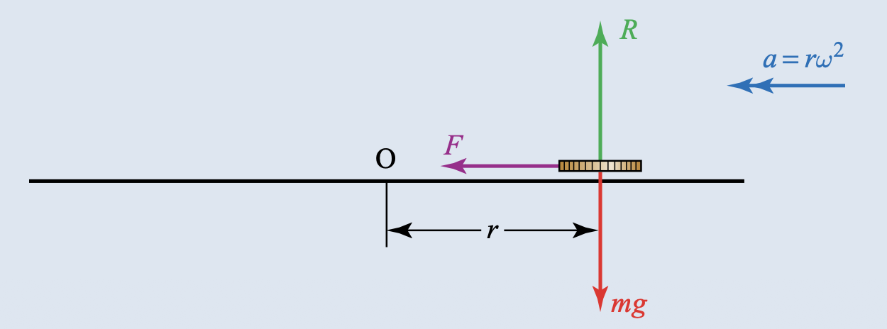
Because the angular speed is increased gradually, the coin does not initially slip tangentially. The frictional force provides the centripetal force.
R-mg=0\quad\Longrightarrow\quad R=mg.
The required friction is
F=mr\omega^2.
At limiting equilibrium, F=\mu R, so
mr\omega^2=\mu mg \quad\Longrightarrow\quad \omega^2=\frac{\mu g}{r}.
Using \mu=0.5, g=10 and r=0.05 m:
\omega^2=100 \quad\Longrightarrow\quad \boxed{\omega=10\ \mathrm{rad\ s^{-1}}}.
(ii) Once the angular speed exceeds this value, the required friction is greater than the limiting friction. The coin slides to a new position farther from the centre; if the speed continues to increase, it eventually reaches the edge and leaves the turntable along the tangent.Example 4.4 · A fairground ride
In Figure 4.10, the diagram on the right represents one of several arms of a fairground ride, shown on the left. The arms rotate about an axis and riders sit in chairs linked to the arms by chains.
The chains are 2 m long and the arms are 3 m long. Find the angle that the chains make with the vertical when the rider rotates at 1.1\ \mathrm{rad\ s^{-1}}.
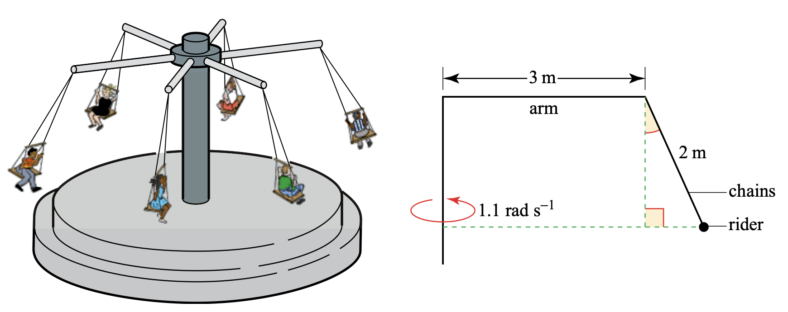
Show answer
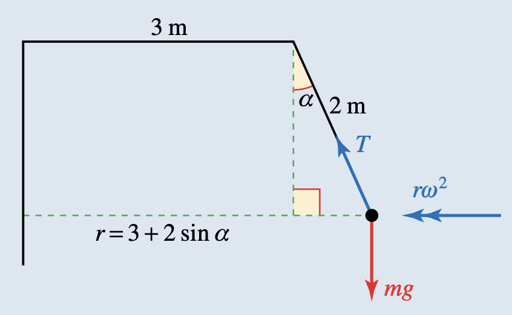
Let the resultant tension be T and let the angle with the vertical be \alpha. The radius of the circular path is
r=3+2\sin\alpha.
Resolving horizontally towards the centre and vertically:
T\sin\alpha=m r\omega^2=m(3+2\sin\alpha)(1.1)^2,
T\cos\alpha=mg.
Eliminating T and using g=10:
10\tan\alpha=1.21(3+2\sin\alpha).
Solving numerically gives
\boxed{\alpha=24.9^\circ}.Example 4.5 · A banked road without sideways friction
A car is rounding a bend of radius 100 m that is banked at an angle of 10^\circ to the horizontal. At what speed must the car travel to ensure it has no tendency to slip sideways?
Show answer
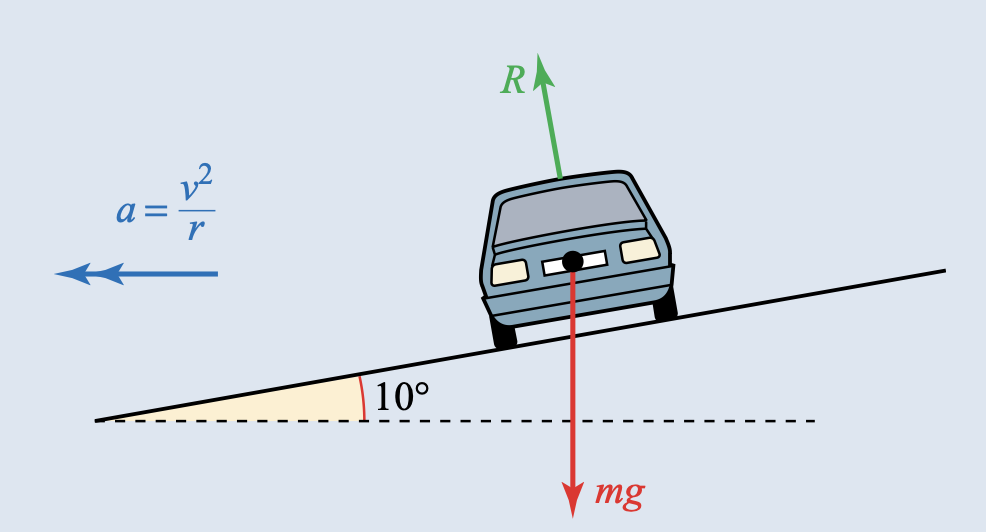
With no tendency to slip, there is no frictional force. Resolving vertically and horizontally towards the centre:
R\cos10^\circ=mg, \qquad R\sin10^\circ=\frac{mv^2}{100}.
Dividing the second equation by the first:
\tan10^\circ=\frac{v^2}{100g}.
Thus
v=\sqrt{100g\tan10^\circ} =\boxed{13.3\ \mathrm{m\ s^{-1}}}.Example 4.6 · Banking a railway track
A bend on a railway track has a radius of 500 m and is to be banked so that a train can negotiate it at 96\ \mathrm{km\ h^{-1}} without the need for a lateral force between its wheels and the rail. The distance between the rails is 1.43 m. How much higher should the outside rail be than the inside one?
Show answer
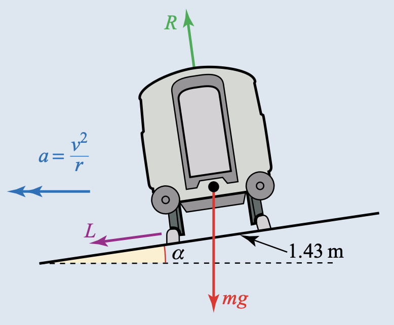
Convert the speed:
96\ \mathrm{km\ h^{-1}}=\frac{80}{3}\ \mathrm{m\ s^{-1}}.
With zero lateral thrust,
R\sin\alpha=\frac{mv^2}{r}, \qquad R\cos\alpha=mg.
Therefore
\tan\alpha=\frac{v^2}{rg} =\frac{(80/3)^2}{500(10)}=\frac{32}{225}.
Hence \alpha=8.1^\circ and the required height difference is
1.43\sin8.1^\circ =\boxed{0.20\ \mathrm{m}\text{ approximately}}.Example 4.7 · A particle attached to a light rod
A particle of mass 0.03 kg is attached to the end, P, of a light rod, OP, of length 0.5 m that is free to rotate in a vertical circle with centre O. The particle is set in motion, starting at the lowest point of the circle. The initial speed of the particle is 2\ \mathrm{m\ s^{-1}}.
(i) Find the initial kinetic energy of the particle.
(ii) Find an expression for the potential energy gained when the rod has turned through an angle \theta.
(iii) Find the value of \theta when the particle first comes to rest.
(iv) Find the stress in the rod at this point, stating whether it is a tension or a thrust.
(v) Repeat parts (i) to (iv) using an initial speed of 4\ \mathrm{m\ s^{-1}}.
(vi) Why is it possible for the first motion to take place if the rod is replaced by a string, but not the second motion?
Show answer
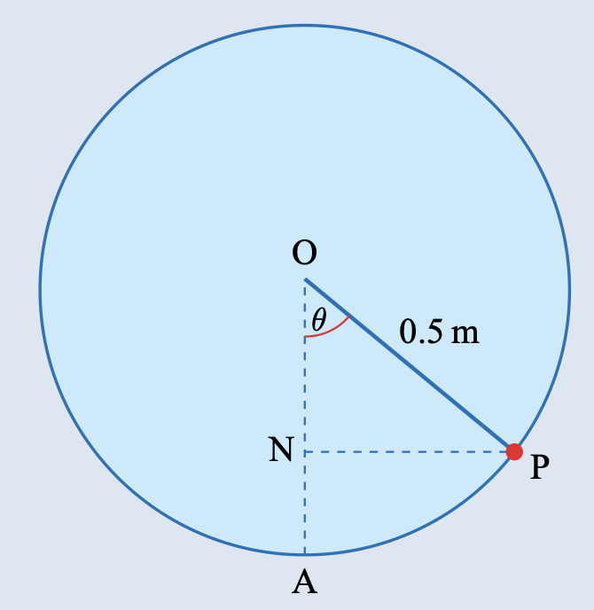
The rise through angle \theta is 0.5(1-\cos\theta) m.
For initial speed 2\ \mathrm{m\ s^{-1}}:
(i)
\boxed{\frac12(0.03)(2)^2=0.06\ \mathrm J}.
(ii)
\boxed{\Delta PE=0.03g\,[0.5(1-\cos\theta)] =0.015g(1-\cos\theta)\ \mathrm J}.
(iii) At the first rest point, 0.015g(1-\cos\theta)=0.06, so
\boxed{\theta=53.1^\circ}.
(iv) At rest, the radial acceleration is zero:
T-0.03g\cos\theta=0.
Thus T=0.180 N, so the rod is in
\boxed{\text{tension of }0.180\ \mathrm N}.
For initial speed 4\ \mathrm{m\ s^{-1}}, the initial kinetic energy is 0.24 J. The same energy equation gives \cos\theta=-0.6, so \theta=126.9^\circ. The radial equation gives T=-0.180 N, which means a thrust of magnitude 0.180 N.
(vi) A string can exert tension but cannot exert thrust. Therefore the first motion is possible with a string, whereas the second is not: the particle would leave the circular path when the tension becomes zero.Example 4.8 · A bead on a smooth circular wire
A bead of mass 0.01 kg is threaded onto a smooth circular wire of radius 0.6 m and is set in motion with a speed of u\ \mathrm{m\ s^{-1}} at the bottom of the circle. This just enables the bead to reach the top of the wire.
(i) Find the value of u.
(ii) What is the direction of the reaction of the wire on the bead when the bead is at the top of the circle?
Show answer
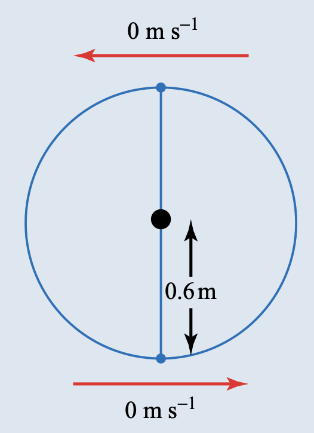
(i) The bead just reaches the top with zero speed. The gain in height is 1.2 m, so
\frac12(0.01)u^2=(0.01)g(1.2).
Hence
u^2=2.4g \quad\Longrightarrow\quad \boxed{u=4.90\ \mathrm{m\ s^{-1}}}.
(ii) At the top, the weight acts towards the centre. Since the speed is zero, the required radial resultant is zero, so the reaction must act upwards, away from the centre:
\boxed{\text{upwards, with magnitude }0.01g\ \mathrm N}.
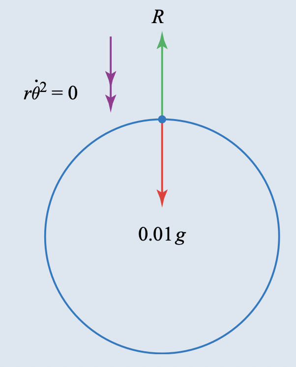
Example 4.9 · A particle on a vertical circle
Determine whether it is possible for a particle, P, of mass m kg to be in the position shown, moving round a vertical circle of radius 0.5 m with an angular speed of 4\ \mathrm{rad\ s^{-1}}, when it is
(i) sliding on the outside of a smooth surface;
(ii) sliding on the inside of a smooth surface;
(iii) attached to the end of a string OP;
(iv) threaded on a smooth ring.
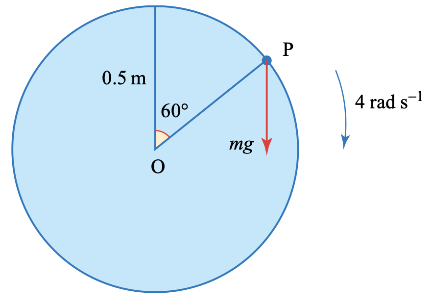
Show answer
The required radial acceleration is
a=r\omega^2=0.5(4)^2=8\ \mathrm{m\ s^{-2}}.
At the shown position, the component of weight towards O is mg\cos60^\circ=5m N.
(i) On the outside, the normal reaction acts away from O:
mg\cos60^\circ-R=8m \quad\Longrightarrow\quad R=-3m.
This is impossible, so the motion is
\boxed{\text{not possible}}.
(ii) On the inside, the normal reaction acts towards O:
R+5m=8m \quad\Longrightarrow\quad R=3m>0.
Therefore the motion is
\boxed{\text{possible}}.
(iii) A string can provide an inward tension, so the motion is
\boxed{\text{possible}}.
(iv) A smooth ring can exert a reaction in either radial direction, so the motion is
\boxed{\text{possible for any angular speed}}.
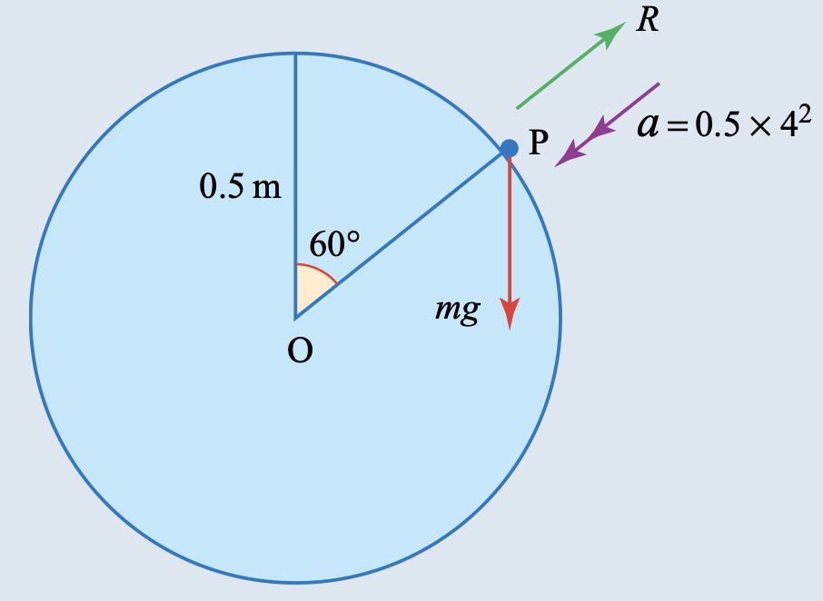
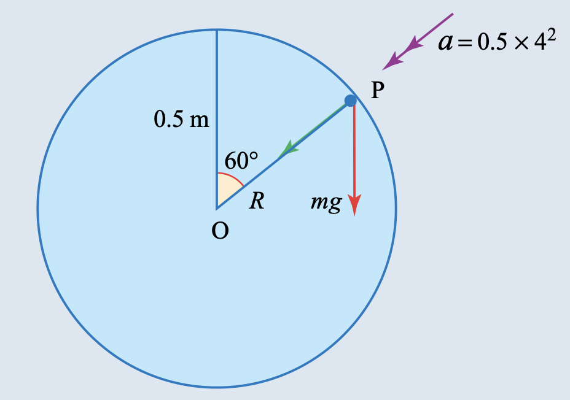
Example 4.10 · A skier on a smooth hump
Eddie, a skier of mass m kg, is skiing down a hillside when he reaches a smooth hump in the form of an arc AB of a circle with centre O and radius 8 m, as shown. O, A and B lie in a vertical plane and OA and OB make angles of 20^\circ and 40^\circ with the vertical, respectively. Eddie’s speed at A is 7\ \mathrm{m\ s^{-1}}. Determine whether Eddie will lose contact with the ground before reaching the point B.
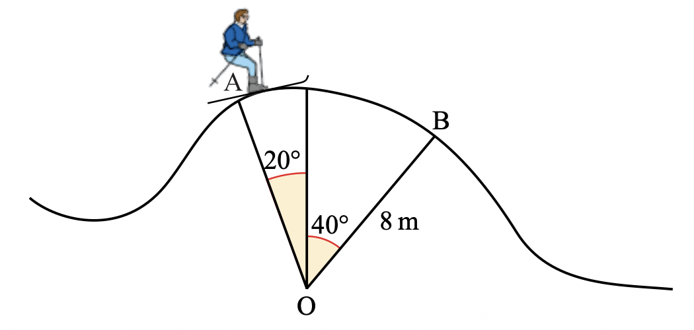
Show answer
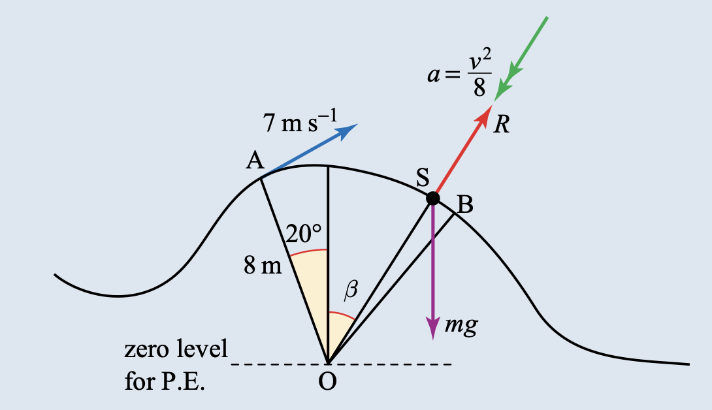
Let S be a general point on the arc and let OS make an angle \beta with the upward vertical. Taking the horizontal through O as the zero level for potential energy,
\frac12mv^2+mg(8\cos\beta) =\frac12m(7)^2+mg(8\cos20^\circ).
Therefore
v^2=199.3-16g\cos\beta.
Resolving towards O,
mg\cos\beta-R=\frac{mv^2}{8}.
Eddie loses contact when R=0, so v^2=8g\cos\beta. Substitution gives
8g\cos\beta=199.3-16g\cos\beta \quad\Longrightarrow\quad \cos\beta=0.830\ldots
and hence
\beta=33.8^\circ.
Since 33.8^\circ<40^\circ, Eddie loses contact before reaching B:
\boxed{\text{he loses contact with the ground before }B}.3. 教材中标注 Cambridge International 的题目
本节收录 Further Mechanics Chapter 4 Exercise 4B 中明确标注 Cambridge International 来源的题目。题目保留英文，图像使用 Pic 文件夹中的独立图片；每个小问单独列出，答案使用 Show answer。
A small sphere S of mass m kg is moving inside a smooth hollow bowl whose axis is vertical and whose sloping side is inclined at 60^\circ to the horizontal. S moves with constant speed in a horizontal circle of radius 0.6 m (see Diagram a). S is in contact with both the plane base and the sloping side of the bowl (see Diagram b).
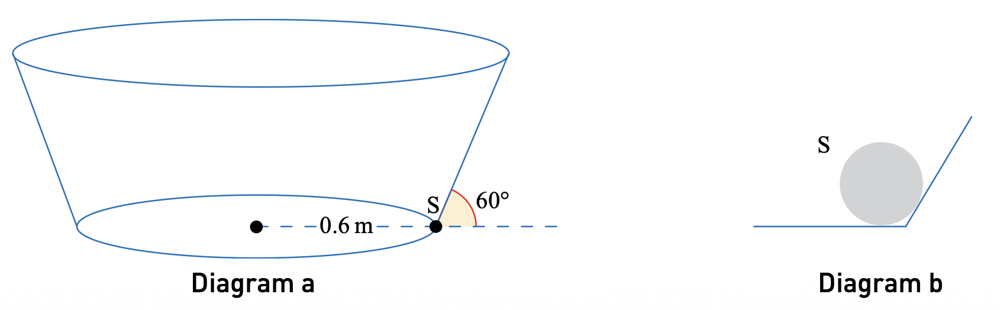
(i) Given that the magnitudes of the forces exerted on S by the base and the sloping side of the bowl are equal, calculate the speed of S.
(ii) Given instead that S is on the point of losing contact with one of the surfaces, find the angular speed of S.
Show answer
Let the normal reactions from the base and sloping side both have magnitude N in part (i). The sloping side is at 60^\circ to the horizontal, so its normal has vertical component N\sin30^\circ and horizontal inward component N\cos30^\circ.
(i) Resolving vertically,
N+N\sin30^\circ=mg \quad\Longrightarrow\quad N=\frac23mg.
The horizontal radial equation is
N\cos30^\circ=\frac{mv^2}{0.6}.
Thus
v^2=0.6\left(\frac23g\right)\cos30^\circ =3.464\ldots
and therefore
\boxed{v=1.86\ \mathrm{m\ s^{-1}}}.
(ii) At the limiting case, the base reaction becomes zero. Hence
N\sin30^\circ=mg \quad\Longrightarrow\quad N=2mg.
The radial equation gives
N\cos30^\circ=m(0.6)\omega^2.
Therefore
\omega^2=\frac{2g\cos30^\circ}{0.6} \quad\Longrightarrow\quad \boxed{\omega=5.37\ \mathrm{rad\ s^{-1}}}.Particles P and Q have masses 0.8 kg and 0.4 kg, respectively. P is attached to a fixed point A by a light inextensible string that is inclined at an angle \alpha to the vertical. Q is attached to a fixed point B, which is vertically below A, by a light inextensible string of length 0.3 m. The string BQ is horizontal. P and Q are joined to each other by a light inextensible string that is vertical. The particles rotate in horizontal circles of radius 0.3 m about the axis through A and B with constant angular speed 5\ \mathrm{rad\ s^{-1}} (see diagram).
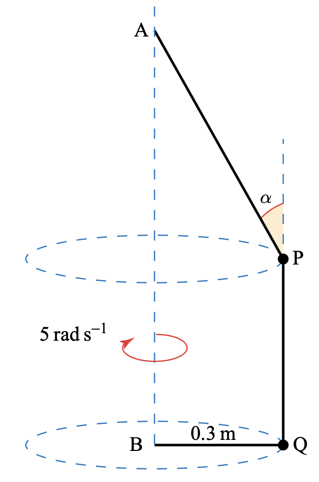
(i) By considering the motion of Q, find the tensions in the strings PQ and BQ.
(ii) Find the tension in the string AP and the value of \alpha.
Show answer
For Q, the horizontal string BQ supplies the centripetal force:
T_{BQ}=0.4(0.3)(5)^2=\boxed{3\ \mathrm N}.
There is no vertical acceleration, so
T_{PQ}=0.4g=\boxed{4\ \mathrm N}.
For P, the vertical component of T_{AP} balances the weight of P and the downward tension from PQ:
T_{AP}\cos\alpha=0.8g+4=12.
The horizontal component supplies the centripetal force:
T_{AP}\sin\alpha=0.8(0.3)(5)^2=6.
Hence
T_{AP}=\sqrt{12^2+6^2}=\boxed{13.4\ \mathrm N},
and
\tan\alpha=\frac{6}{12}=\frac12 \quad\Longrightarrow\quad \boxed{\alpha=26.6^\circ}.4. Paper 3 真题题库
本节用于收录 Paper 3 中涉及 horizontal circular motion、conical pendulum、vertical circular motion、loss of contact、banked track 和 centripetal force 的真题；题目与答案按 Mark Scheme 分点整理。
Paper 3 questions
Questions are arranged by examination session and question number. The wording is kept in English, including every sub-question. Each solution is presented as a sequence of mark-scheme points.
2021 May/June · 9231/31 and 9231/32 · Question 5
A particle P of mass m is attached to one end of a light inextensible string of length a. The other end of the string is attached to a fixed point O. The particle completes vertical circles with centre O. The points A and B are on the path of P, both on the same side of the vertical through O. OA makes an angle i with the downward vertical through O and OB makes an angle i with the upward vertical through O.
The speed of P when it is at A is u and the speed of P when it is at B is \sqrt{ag}. The tensions in the string at A and B are T_A and T_B respectively. It is given that T_A=7T_B.
Find the value of i and find an expression for u in terms of a and g.
Show answer
Taking forces towards the centre at A and B:
T_A-mg\cos i=\frac{mu^2}{a},
T_B+mg\cos i=mg.
Using T_A=7T_B and eliminating the tensions gives
u^2=ag(7-8\cos i).
Conservation of energy between A and B gives
\frac12mu^2-\frac12m(ag)=mg(2a\cos i),
so
u^2=ag(4\cos i+1).
Equating the two expressions for u^2:
7-8\cos i=4\cos i+1 \quad\Longrightarrow\quad \cos i=\frac12.
Therefore
\boxed{i=60^\circ}.
Substitution gives
\boxed{u=\sqrt{3ag}}.2021 May/June · 9231/33 · Question 4
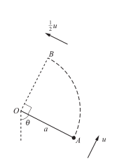
A particle of mass m is attached to one end of a light inextensible string of length a. The other end of the string is attached to a fixed point O. The particle is initially held with the string taut at the point A, where OA makes an angle i with the downward vertical through O. The particle is then projected with speed u perpendicular to OA and begins to move upwards in part of a vertical circle. The string goes slack when the particle is at the point B where angle AOB is a right angle. The speed of the particle when it is at B is \frac12u.
Find the tension in the string at A, giving your answer in terms of m and g.
Show answer
The gain in height from A to B is a\cos i+a\sin i. Conservation of energy gives
\frac12mu^2-\frac12m\left(\frac u2\right)^2 =mg(a\cos i+a\sin i),
so
\frac34u^2=2ag(\cos i+\sin i).
At B the string is slack, so T=0. Resolving towards O:
mg\sin i=\frac{m(u/2)^2}{a} \quad\Longrightarrow\quad u^2=4ag\sin i.
Eliminating u gives
\tan i=2.
At A,
T_A-mg\cos i=\frac{mu^2}{a}.
Using \sin i=2/\sqrt5, \cos i=1/\sqrt5 and u^2=8ag/\sqrt5:
T_A=mg\cos i+\frac{mu^2}{a} =\frac{mg}{\sqrt5}+\frac{8mg}{\sqrt5}.
Therefore
\boxed{T_A=\frac{9}{\sqrt5}mg\ \mathrm N}
or T_A=4.02mg\ \mathrm N.2022 October/November · 9231/31 · Question 5
A particle P of mass m is attached to one end of a light inextensible string of length a. The other end of the string is attached to a fixed point O. The string is held taut with OP horizontal. The particle P is projected vertically downwards with speed \frac13\sqrt{ag} and starts to move in a vertical circle. P passes through the lowest point of the circle and reaches the point Q where OQ makes an angle i with the downward vertical. At Q the speed of P is \sqrt{kag} and the tension in the string is \frac{11}{6}mg.
(a) Find the value of k and the value of \cos i.
At Q the particle P becomes detached from the string.
(b) In the subsequent motion, find the greatest height reached by P above the level of the lowest point of the circle.
Show answer
(a) From energy between the initial horizontal position and Q:
\frac12m(kag)-\frac12m\left(\frac19ag\right)=mga\cos i.
At Q, resolving towards O:
\frac{11}{6}mg-mg\cos i=\frac{m(kag)}{a}=kmg.
Solving these two equations gives
\boxed{k=\frac43}, \qquad \boxed{\cos i=\frac12}.
(b) After detachment, the initial upward component of velocity is
\sqrt{\frac43ag}\sin i.
The particle rises a further distance s satisfying
0=\left(\sqrt{\frac43ag}\sin i\right)^2-2gs,
so s=\frac12a. The height of Q above the lowest point is
a(1-\cos i)=\frac12a.
Therefore the required total height is
\boxed{a}.2022 October/November · 9231/32 · Question 6
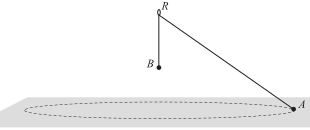
A light inextensible string is threaded through a fixed smooth ring R which is at a height h above a smooth horizontal surface. One end of the string is attached to a particle A of mass m. The other end is attached to a particle B of mass \frac67m. Particle A moves in a horizontal circle on the surface. Particle B hangs in equilibrium below the ring and above the surface.
When A has constant angular speed \omega, the angle between AR and BR is i and the normal reaction between A and the surface is N. When A has constant angular speed \frac32\omega, the angle is \alpha and the normal reaction is \frac12N.
(a) Show that \cos i=\frac49\cos\alpha.
(b) Find N in terms of m and g and find \cos\alpha.
Show answer
The tension is constant because B is in equilibrium:
T=\frac67mg.
For A, the radius is h\tan i. Resolving vertically and horizontally:
N+T\cos i=mg, \qquad T\sin i=m(h\tan i)\omega^2.
The second equation simplifies to
\omega^2=\frac{6g}{7h}\cos i.
For the second angular speed,
\left(\frac32\omega\right)^2=\frac{6g}{7h}\cos\alpha.
Therefore
\boxed{\cos i=\frac49\cos\alpha}.
For the normal reactions,
N=mg-\frac67mg\cos i,
\frac12N=mg-\frac67mg\cos\alpha.
Substitute \cos i=\frac49\cos\alpha and solve:
\boxed{\cos\alpha=\frac34}, \qquad \boxed{N=\frac57mg}.2024 May/June · 9231/31 and 9231/32 · Question 5
Two particles A and B of masses m and km respectively are connected by a light inextensible string of length a. The particles are placed on a rough horizontal circular turntable with the string taut and lying along a radius of the turntable. Particle A is at a distance a from the centre and particle B is at a distance 2a from the centre. The coefficient of friction between each particle and the turntable is \frac15. When the turntable rotates with angular speed \frac25\sqrt{g/a}, the system is in limiting equilibrium.
(a) Find the tension in the string, in terms of m and g.
(b) Find the value of k.
Show answer
The angular speed gives
a\omega^2=\frac4{25}g.
For A, friction acts outwards at the limiting value \frac15mg:
\frac15mg-T=\frac4{25}mg.
Thus
\boxed{T=\frac1{25}mg}.
For B, the limiting friction is \frac15kmg and its radius is 2a:
T+\frac15kmg=km(2a)\omega^2=\frac8{25}kmg.
Substitution of T=\frac1{25}mg gives
\boxed{k=\frac13}.2024 October/November · 9231/31 and 9231/33 · Question 6
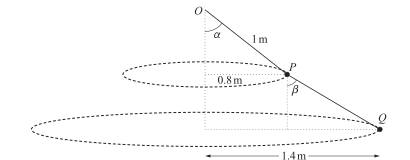
A particle P of mass 0.05 kg is attached to one end of a light inextensible string of length 1 m. The other end is attached to a fixed point O. A particle Q of mass 0.04 kg is attached to one end of a second light inextensible string, whose other end is attached to P.
Particle P moves in a horizontal circle of radius 0.8 m with angular speed \omega. Particle Q moves in a horizontal circle of radius 1.4 m with the same angular speed. The centres of the circles are vertically below O, and the strings remain at constant angles \alpha and \beta to the vertical.
(a) Find the tension in OP.
(b) Find \omega.
(c) Find \beta.
Show answer
Let the tensions in OP and PQ be T_1 and T_2.
(a) Vertical equilibrium for Q and then for P gives
T_2\cos\beta=0.04g, \qquad T_1\cos\alpha=T_2\cos\beta+0.05g=0.09g.
Therefore
\boxed{T_1=0.15g=1.50\ \mathrm N}.
(b) Radial equations give
T_1\sin\alpha-T_2\sin\beta=0.05(0.8)\omega^2,
T_2\sin\beta=0.04(1.4)\omega^2.
Hence
T_1\sin\alpha=0.096\omega^2.
Using T_1\cos\alpha=0.09g and the geometry of OP gives
\boxed{\omega=\frac{5}{\sqrt2}\ \mathrm{rad\ s^{-1}}}.
(c)
\tan\beta=\frac{T_2\sin\beta}{T_2\cos\beta} =\frac{0.04(1.4)\omega^2}{0.04g}=\frac74.
Therefore
\boxed{\beta=60.3^\circ}.2024 October/November · 9231/32 · Question 1
A particle of mass 2 kg is attached to one end of a light elastic string of natural length 0.8 m and modulus of elasticity 100 N. The other end is attached to a fixed point O on a smooth horizontal surface. The particle moves in a horizontal circle about O with the string taut and constant angular speed 5\ \mathrm{rad\ s^{-1}}.
Find the extension of the string.
Show answer
Let the extension be x. The string length is 0.8+x, so the radial equation is
\frac{100}{0.8}x=2(0.8+x)(5)^2.
Solving,
100x=40(0.8+x) \quad\Longrightarrow\quad 60x=32.
Hence
\boxed{x=\frac8{15}=0.533\ \mathrm m}.2024 October/November · 9231/32 · Question 6
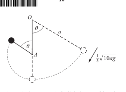
A particle P of mass m is attached to one end of a light inextensible string of length a. The other end is attached to a fixed point O. The particle is projected at right angles to the string and moves downwards in a circular path. When the string is vertical, it strikes a smooth peg A below O and P then moves in a vertical circle with centre A. The string becomes slack when it makes an angle i with the upward vertical through A. The distance of A below O is \frac59a.
(a) Find \cos i.
(b) Find the ratio of the tensions immediately before and immediately after the string strikes the peg.
Show answer
Using conservation of energy before and after the peg, and using T=0 when the string becomes slack, the two radial equations are
v^2=\frac{28}{9}ag-2ag\cos i,
w^2=\frac{20}{9}ag-\frac{26}{9}ag\cos i,
and
mg\cos i=\frac{mw^2}{4a/9}.
Eliminating w gives
\boxed{\cos i=\frac23}.
Immediately before and after the peg, the radial equations use radii a and \frac49a. Substitution gives
T_1=\frac{25}{9}mg, \qquad T_2=5mg.
Therefore
\boxed{T_1:T_2=5:9}.2025 May/June · 9231/31 and 9231/32 · Question 3
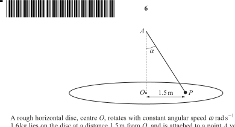
A rough horizontal disc, centre O, rotates with constant angular speed \omega. A particle P of mass 1.6 kg lies on the disc at a distance 1.5 m from O and is attached to a point A vertically above O by a light elastic string. The string has natural length 2 m, modulus of elasticity 32 N and makes an angle \alpha with the vertical. Particle P moves in a horizontal circle with the same angular speed. P is on the point of slipping in the direction OP and the coefficient of friction is 0.5.
(a) Given that the tension is 8 N, show that \sin\alpha=0.6.
(b) Find the number of revolutions per minute made by the disc and P.
Show answer
The extension is found from the elastic-string law:
8=\frac{32}{2}x\quad\Longrightarrow\quad x=0.5.
The string length is 2.5 m and its horizontal projection is 1.5 m, so
\sin\alpha=\frac{1.5}{2.5}=\boxed{0.6}.
The vertical reaction is
R=1.6g-8\cos\alpha.
At limiting friction,
8\sin\alpha+0.5R=1.6(1.5)\omega^2.
Using \sin\alpha=3/5, \cos\alpha=4/5 gives
\omega^2=4\quad\Longrightarrow\quad\omega=2\ \mathrm{rad\ s^{-1}}.
Hence the number of revolutions per minute is
\frac{60\omega}{2\pi}=\boxed{19.1\ \mathrm{rpm}}.2025 May/June · 9231/33 · Question 1
A particle P of mass m is attached to one end of a light inextensible string of length a. The other end is attached to a fixed point O. The particle moves in a horizontal circle with constant angular speed \omega, and the string is inclined at an angle i to the downward vertical. Given that \tan i=\frac43, find \omega in terms of a and g.
Show answer
For the conical pendulum,
T\cos i=mg, \qquad T\sin i=mr\omega^2, \qquad r=a\sin i.
Using r=a\sin i and eliminating T gives
a\omega^2=g\sec i=\frac53g.
Therefore
\boxed{\omega=\sqrt{\frac{5g}{3a}}}.2025 May/June · 9231/33 · Question 5
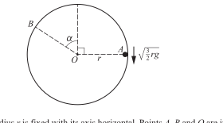
A hollow cylinder of radius r is fixed with its axis horizontal. Points A, B and O are in the same vertical plane perpendicular to the axis, with A and B on the smooth inner surface and O on the axis. OA and OB make angles 90^\circ and \alpha respectively with the upward vertical through O, with A and B on opposite sides of the vertical. A particle of mass m is projected vertically downwards from A with speed \frac32\sqrt{rg} and moves in a vertical circle inside the cylinder. The particle loses contact with the cylinder at B.
(a) Find the value of \alpha.
(b) In the subsequent motion find, in terms of r, the greatest height above O reached by the particle.
Show answer
At B, loss of contact means R=0. Energy from A to B gives
v^2=\frac32rg-2rg\cos\alpha.
The radial equation at B is
mg\cos\alpha=\frac{mv^2}{r}.
Eliminating v:
g\cos\alpha=\frac32g-2g\cos\alpha \quad\Longrightarrow\quad \cos\alpha=\frac12.
Thus
\boxed{\alpha=60^\circ}, \qquad \boxed{v^2=\frac12rg}.
After leaving the cylinder, the upward component of velocity is v\sin60^\circ. If the further rise is h,
0=(v\sin60^\circ)^2-2gh \quad\Longrightarrow\quad h=\frac{3r}{16}.
The height of B above O is r\cos60^\circ=\frac12r, so the greatest height above O is
\boxed{\frac{11}{16}r}.2025 October/November · 9231/31 and 9231/33 · Question 2
A particle P of mass m is moving in a horizontal circle on the smooth inner surface of a hemispherical shell of radius r. The angle between the upward vertical and the normal reaction is i_1, where \tan i_1=\frac34. When the angular speed is increased to \omega_2, the angle becomes i_2, where \tan i_2=\frac43. Find the ratio \omega_1/\omega_2.
Show answer
For either position, resolving vertically and radially:
N\cos i=mg, \qquad N\sin i=m(r\sin i)\omega^2.
Eliminating N gives
\omega^2=\frac{g}{r\cos i}.
Thus
\frac{\omega_1^2}{\omega_2^2}=\frac{\cos i_2}{\cos i_1}.
Since \tan i_1=3/4 and \tan i_2=4/3,
\cos i_1=\frac45, \qquad \cos i_2=\frac35.
Therefore
\boxed{\frac{\omega_1}{\omega_2}=\frac{\sqrt3}{2}}.2025 October/November · 9231/32 · Question 1
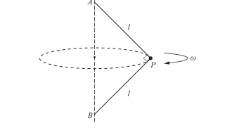
A particle P of mass m is attached to two light inextensible strings each of length l. The end of one string is attached to a fixed point A and the end of the other string is attached to a fixed point B, with A vertically above B. Angle APB is a right angle. The particle P rotates in a horizontal circle at constant angular speed \omega, with both strings taut.
Find the tension in string AP in terms of m, g, l and \omega.
Show answer
Let the tensions in AP and BP be T_A and T_B. Resolving horizontally towards the axis and vertically:
T_A\cos45^\circ+T_B\sin45^\circ=m\omega^2l\sin45^\circ,
T_A\sin45^\circ-T_B\cos45^\circ=mg.
Adding the appropriate multiples eliminates T_B:
2T_A=m\omega^2l+2mg.
Hence
\boxed{T_A=\frac12m(\omega^2l+2g)}.2025 October/November · 9231/32 · Question 6
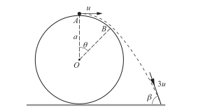
A fixed smooth sphere with radius a and centre O rests on horizontal ground. A particle is projected horizontally from the highest point A with speed u. It moves along the surface and loses contact at B, where the angle AOB is i. After leaving the sphere, it moves freely under gravity before striking the ground with speed 3u at an angle \beta to the horizontal. Find \beta.
Show answer
The whole motion from A to the ground gives
9u^2=u^2+4ag \quad\Longrightarrow\quad u^2=\frac12ag.
At the point of losing contact, R=0. Resolving towards O and using energy from A to B gives
mg\cos i=\frac{mv^2}{a},
\frac12mv^2+mg(a\cos i)=\frac12mu^2+mga.
Eliminating v gives the standard loss-of-contact condition
\cos i=\frac56, \qquad v^2=\frac56ag.
After leaving the sphere, horizontal velocity is unchanged. Resolving the final velocity into horizontal and vertical components and using final speed 3u gives
\tan\beta=\frac{\text{vertical component}}{\text{horizontal component}}.
Using the unchanged horizontal component of velocity after leaving the sphere,
v\cos i=3u\cos\beta.
Substitution of the loss-of-contact values gives
\boxed{\beta=69.0^\circ}.5. 本章检查清单
- angular speed 的单位必须是 radians per second；
- velocity 是 tangent 方向，centripetal acceleration 指向圆心；
- a=v^2/r 是 acceleration magnitude，不是 force；
- 水平圆运动必须分别处理 horizontal radial 与 vertical directions；
- banked track 无 sideways force 时使用 \tan\alpha=v^2/(rg)；
- vertical circle 必须结合能量和 radial Newton’s second law；
- string 只能提供 tension，不能提供 thrust；
- particle 离开 surface 的临界条件是 R=0，不是 R=mg。